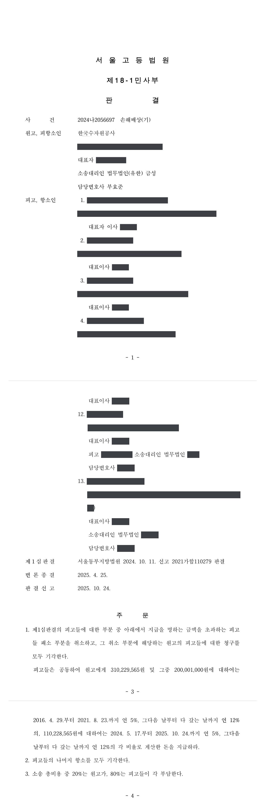

입찰담합 손해배상 청구소송 (1·2심)
서울동부지방법원 2021가합110279 · 서울고등법원 2024나2056697 · 담당변호사 부효준
판결문


사건의 요지
공공기관이 발주한 자재 구매 입찰에서 사업자단체와 회원사들의 담합을 이유로 발주기관이 제기한 손해배상 청구에서 담합의 인정과 손해액의 산정이 다투어진 사건입니다.
사건의 주요 내용
피고 조합은 고강도 콘크리트 파일(PHC 파일)을 생산하는 중소기업들이 설립한 사업자단체이고, 나머지 피고들은 그 회원사들입니다. 피고 조합과 회원사들은 2009년경부터 실무자협의회·대표자협의회 등을 통하여 공공기관이 발주하는 콘크리트 파일 구매 입찰에서 낙찰예정사와 들러리사, 투찰금액을 미리 정하고, 무응찰·단독응찰 등으로 입찰을 유찰시켜 특정 회원사가 수의계약을 맺도록 하는 담합을 하였습니다. 관련 임직원들은 입찰방해죄로 기소되어 2018년 10월 유죄판결이 확정되었고, 공정거래 당국은 2020년 5월 시정명령과 과징금을 부과하였습니다.
원고 공단(공기업)은 2012년 10월부터 2016년 4월까지 10건의 콘크리트 파일 구매계약(계약금액 합계 약 50억 8,600만 원)을 체결한 발주자 또는 수요기관이었습니다. 원고는 2018년 8월 조달기관으로부터 담합 사실과 손해배상청구 검토를 안내하는 공문을 받고, 2021년 8월 피고 조합과 회원사 17개 회사를 상대로 손해배상청구 소송을 제기하였습니다. 청구금액은 각 계약금액의 7.6245%에 해당하는 387,786,957원과 지연손해금이었습니다.
부효준 변호사는 1심과 항소심에서 원고 공단을 대리하였습니다.
피고의 주장
- 다양한 규격의 제품을 원활히 공급하기 위하여 불가피하게 정보를 공유한 것일 뿐이고, 계약금액이 사급 시장가격보다 낮거나 같아 원고에게 손해가 발생하지 않았다고 주장하였습니다.
- 임직원들이 입찰방해죄로 기소되고 1심 유죄판결이 선고된 2016년에 원고가 불법행위를 알았으므로 민법 제766조의 3년 단기소멸시효가 완성되었고, 상사채권으로서 5년의 상사시효도 지났다고 주장하였습니다. 항소심에서는 조달기관이 계약당사자인 계약(제1, 2, 5~9 입찰계약)에는 국가재정법 제96조의 5년 재정시효가 적용된다는 주장을 더하였습니다.
- 항소심에서 조달기관이 체결한 계약은 제3자를 위한 계약으로서 수요기관인 원고는 수익자에 불과하므로 손해배상채권을 직접 행사할 수 없다고 주장하였습니다.
- 개별 입찰마다 가담 정도가 다르므로 책임을 달리 정해야 하고, 손해액에서 부가가치세를 빼야 하며, 조달기관의 우월적 지위와 최저가 총액계약 방식, 형사처벌과 과징금 부과 등을 고려하여 책임을 제한하여야 한다고 주장하였습니다.
부효준 변호사의 주장
- 확정된 형사판결과 공정거래 당국의 처분에서 인정된 담합 사실은 민사재판에서도 유력한 증거이므로, 피고들은 구 공정거래법 제19조 제1항 제8호를 위반한 공동불법행위자로서 연대하여 손해를 배상하여야 한다고 주장하였습니다.
- 손해액은 다른 공공기관이 같은 피고들을 상대로 제기한 관련 민사소송에서 채택된 중회귀분석 방식의 감정 결과에 따라 최종 구매대금의 7.6245%로 산정하여야 한다고 주장하였습니다.
- 소멸시효는 원고가 조달기관의 공문을 받아 자기 계약이 담합 대상이었음을 현실적·구체적으로 인식한 2018년 8월부터 진행하고, 불법행위로 인한 손해배상채권에는 상사시효가 적용되지 않으며, 원고는 국가와 별개의 법인인 공기업이므로 국가재정법의 재정시효도 적용되지 않는다고 반박하였습니다.
- 조달기관이 수요기관의 요청에 따라 체결한 요청조달계약에서 대금을 종국적으로 부담하는 것은 수요기관이므로, 수요기관이 담합으로 입은 손해를 직접 청구할 수 있다는 대법원 판례(2022. 3. 31. 선고 2017다247145 판결)를 들어 당사자적격을 다툰 주장에 반박하였습니다.
법원의 판단
1심은 동일한 사실관계에 관하여 확정된 형사판결이 유죄로 인정한 사실은 유력한 증거자료라는 대법원 판례(1997. 9. 30. 선고 97다24276 판결 등)에 따라 피고들의 담합과 공동불법행위를 인정하였습니다. 경쟁입찰에서 담합이 있으면 가격경쟁이 배제되고 담합이 없었다면 낙찰가격이 낮아졌을 가능성이 있다는 이유로 손해 미발생 주장을 배척하였고, 소멸시효는 원고가 조달기관의 공문을 받은 2018년 8월에 비로소 불법행위의 요건사실을 현실적·구체적으로 인식하였다고 보아 2021년 8월의 제소가 3년 안에 이루어졌다고 판단하였습니다. 상사시효는 불법행위 손해배상채권에 적용되지 않는다고 보았습니다.
손해액에 관하여 1심은 관련 민사소송 감정인의 단순 전후비교법은 담합기간의 호황과 비담합기간의 불황, 대기업의 시장 진입 등 변수를 반영하지 않아 합리성이 없다고 보고, 여러 변수를 통제한 중회귀분석 방식의 감정 결과에 따라 최종 구매대금의 7.6245%를 손해액으로 인정하여 청구액 387,786,957원 전부를 인용하였습니다. 가담 정도에 따른 책임 분할과 부가가치세 제외 주장은 받아들이지 않았습니다.
항소심은 1심 판결을 대부분 그대로 인용하면서(항소하지 않은 5개 회원사 부분은 분리 확정), 요청조달계약에서 대금을 종국적으로 부담하는 수요기관은 담합으로 입은 손해를 직접 청구할 수 있고, 국가재정법 제96조 제1항은 '국가의 권리'에만 적용되므로 국가와 별개의 법인인 공기업인 원고의 청구권에는 적용되지 않는다고 판단하였습니다.
다만 항소심은 계량경제학적 분석에 내재한 불완전성, 담합기간의 호황과 높은 경유가격으로 손해액이 과다하게 평가되었을 가능성, 과징금이 부당이득 환수의 성격도 가진다는 점을 들어 피고들의 책임을 손해액의 80%인 310,229,565원으로 제한하였습니다. 그 결과 1심 판결 가운데 이를 초과하는 부분이 취소되고 피고들의 나머지 항소는 받아들여지지 않았으며, 소송총비용은 원고가 20%, 피고들이 80%를 부담하게 되었습니다.
불법행위로 인한 손해배상청구권의 단기소멸시효의 기산점이 되는 민법 제766조 제1항 소정의 ‘손해 및 가해자를 안 날’이라 함은 손해의 발생, 위법한 가해행위의 존재, 가해행위와 손해의 발생과의 사이에 상당인과관계가 있다는 사실 등 불법행위의 요건 사실에 대하여 현실적이고도 구체적으로 인식하였을 때를 의미하고, 피해자 등이 언제 불법행위의 요건사실을 현실적이고도 구체적으로 인식한 것으로 볼 것인지는 개별적 사건에 있어서의 여러 객관적 사정을 참작하고 손해배상청구가 사실상 가능하게 된 상황을 고려하여 합리적으로 인정하여야 할 것이다(대법원 2008. 4. 24. 선고 2006다30440 판결 등 참조).
서울동부지방법원 2021가합110279 판결 이유 '2. 나. 3) 소멸시효 완성 주장에 대한 판단 — 나) 판단' (서울고등법원 2024나2056697 판결이 인용)
위법한 가격 담합에 의하여 가격이 인상된 재화나 용역을 매수한 경우에, 매수인이 입는 직접적인 손해는 특별한 사정이 없다면 실제 매수한 가격과 담합행위가 없었을 경우에 형성되었을 가격(이하 ‘가상 경쟁가격’이라고 한다)의 차액이 되며, 여기서 가상 경쟁가격은 담합행위가 발생한 당해 시장의 다른 가격형성 요인을 그대로 유지한 상태에서 담합행위로 인한 가격상승분만을 제외하는 방식으로 산정된다(대법원 2012. 11. 29. 선고 2010다93790 판결 등 참조).
서울동부지방법원 2021가합110279 판결 이유 '3. 가. 담합행위로 인한 구체적인 손해배상액의 산정'
조달기관의 장이 「조달사업에 관한 법률」에 따라 수요기관으로부터 계약 체결을 요청받아 그에 따라 체결하는 계약(이하 ‘요청조달계약’이라 한다)에서의 수요기관의 지위, 관련 법령 규정의 문언과 내용, 체계 등에 비추어 볼 때, 조달기관의 장이 수요기관으로부터 요청받은 물품 구매계약을 체결하기 위해 「국가를 당사자로 하는 계약에 관한 법률」에 근거하여 입찰을 실시하면서 수요기관으로 하여금 그 물품대금을 직접 지급하도록 하고, 이에 따라 수요기관이 자신의 명의와 출연으로 낙찰자에게 물품대금을 지급하였다면, 특별한 사정이 없는 한 수요기관은 물품 구매계약의 당사자는 아니지만 수익자로서 조달기관의 장과는 독립된 지위에서 물품대금을 지급하였다고 할 것이고, 입찰 과정에서의 담합 등으로 인하여 수요기관에 손해가 발생하였다면 수요기관은 불법행위자들에게 그 손해배상을 청구할 수 있다고 봄이 타당하다(대법원 2022. 3. 31. 선고 2017다247145 판결 등 참조).
서울고등법원 2024나2056697 판결 이유 '1. 제1심판결의 인용' 중 추가한 '3) 손해배상청구권 귀속 여부에 관한 주장에 대한 판단'
※ 판결 이유 가운데 이 사건의 판단 기준이 된 부분을 그대로 옮긴 것으로, 당사자 이름 등은 가렸습니다.
이 사건이 보여 주는 것
공공기관이 입찰담합으로 입은 손해를 청구할 때 먼저 부딪히는 문제는 소멸시효입니다. 이 판결은 담합 임직원에 대한 형사판결이 선고되었다는 사정만으로 피해기관이 손해와 가해자를 알았다고 보지 않고, 조달기관의 통지로 자기 계약이 담합 대상임을 구체적으로 인식한 때부터 3년이 진행한다고 보았습니다. 또 조달기관을 통하여 체결한 요청조달계약도 대금을 종국적으로 부담한 수요기관이 직접 청구할 수 있고, 공기업에는 국가재정법의 5년 재정시효가 적용되지 않는다는 점이 확인되었습니다.
손해액은 실제 구매가격과 '가상 경쟁가격'의 차액으로 산정되며, 다른 기관의 소송에서 채택된 계량경제학적 감정 결과(이 사건에서는 구매대금의 7.6245%)를 활용할 수 있습니다. 다만 항소심은 분석의 불완전성과 과징금 부과 등을 들어 책임을 80%로 제한하였으므로, 청구금액을 정할 때 이러한 감액 가능성도 고려할 필요가 있습니다.
관련 법령구 독점규제 및 공정거래에 관한 법률 제19조 제1항 제8호 · 민법 제766조 제1항 · 상법 제64조 · 국가재정법 제96조 제1항, 제6조 · 조달사업에 관한 법률(구법 제5조의3 제4항) · 국가를 당사자로 하는 계약에 관한 법률 · 중소기업제품 구매촉진 및 판로지원에 관한 법률 제6조 · 공공기관의 운영에 관한 법률 제44조, 제5조 제3항 · 민사소송법 제420조
관련 단어입찰담합손해배상부당한 공동행위공정거래법 제19조가상 경쟁가격중회귀분석소멸시효 기산점손해 및 가해자를 안 날요청조달계약수요기관국가재정법 재정시효책임 제한공동불법행위일부 인용국가계약법공공기관운영법조달계약
비슷한 처분을 받으셨다면
행정처분은 처분이 있음을 안 날부터 90일 이내에 행정심판이나 취소소송으로 다투어야 하고, 기간이 지나면 돌이킬 수 없는 처분은 집행정지를 서둘러야 합니다. 처분서를 받은 날짜부터 확인해 드립니다.